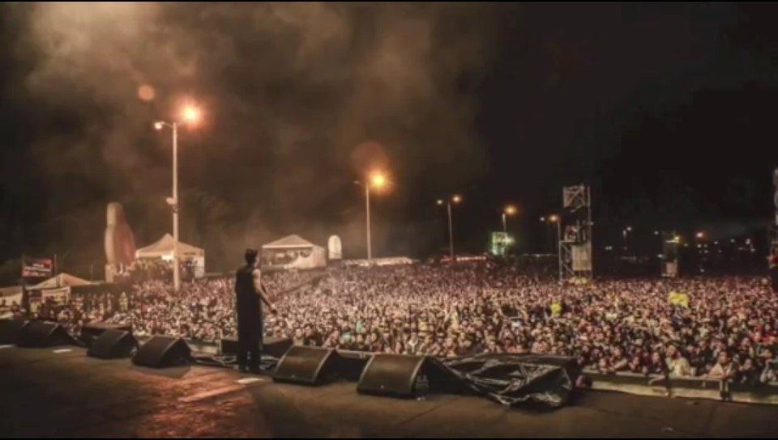

El rap en Venezuela sigue creciendo, todos recordamos a esos grupos que sonaron en el
“underground” o en los “ghettos” como La Corte, Guerrilla Seca, Vagos y Maleantes o
hasta el propio Cuarto Poder, entre los MC’s que han nacido y empezado en este nuevo
milenio hay uno que a tenido mucha atención por el público de este género, hasta generando
nuevos adeptos con sus rimas, canciones o sus propios “beats”.

1.Colombia
2.Peru
3.Chile
4.Ecuador
5.Argentina